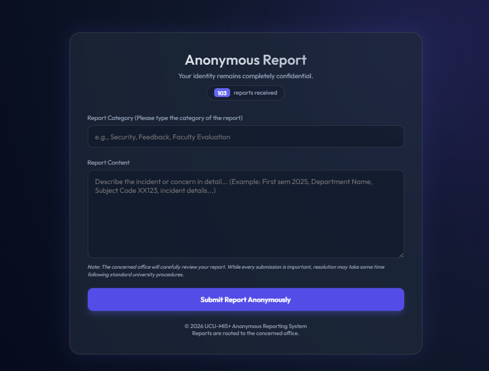

The UCU Anonymous Report System is a secure digital platform designed to allow students, faculty, and other university stakeholders to submit concerns, complaints, or feedback confidentially. It ensures that the identity of the reporter remains completely anonymous, encouraging a safe and open reporting environment without fear of retaliation.
The system provides a simple interface where users can select or input a report category (such as security concerns, academic feedback, or faculty-related issues) and provide a detailed description of the incident or concern. This allows reports to be properly categorized and directed to the appropriate office for review and action.
Once submitted, reports are securely transmitted to the designated university office for evaluation and resolution in accordance with institutional policies and procedures. The system also tracks the number of reports received, supporting transparency and accountability in handling concerns.
Overall, the Anonymous Report System strengthens UCU’s commitment to student welfare, institutional transparency, and responsive governance by providing an accessible and confidential channel for raising issues and improving university services.
| UCU Anonymous Report System - Submission Portal |
|---|
|
 Screenshot of the live anonymous report interface showing categories and feedback description fields.
|